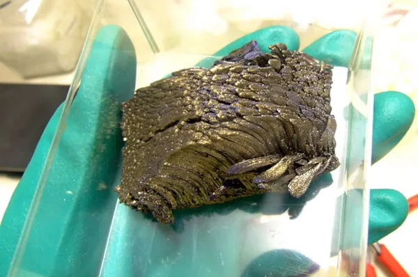
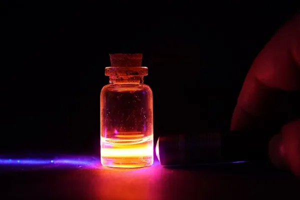

O európio é um elemento químico pertencente ao grupo dos lantanídeos, de número atômico 63. É conhecido principalmente por suas propriedades luminescentes, sendo utilizado em telas, lâmpadas fluorescentes e sistemas de segurança.
Elemento químico • Nº atômico 63

Amostra de európio metálico.| Caracteristica | Informação |
|---|---|
| Nome | Európio |
| Símbolo | Eu |
| Número atómico | 63 |
| Massa atómica relativa | 151,964 |
| Estado físico à temperatura ambiente | Sólido |
| Ponto de fusão | 1095 K (822 °C) |
| Ponto de ebulição | 1869 K (1596 °C) |
O európio é um metal de aparência prateada que pode adquirir uma coloração amarelada devido à rápida oxidação quando exposto ao ar. É um elemento altamente reativo, que reage com a água e com ácidos fortes.
Uma de suas principais propriedades é a luminescência. Seus compostos podem emitir diferentes cores e, quando estimulados por radiação ultravioleta, podem produzir uma intensa luz vermelha.

Brilho da solução de cloreto de európio sob luz ultravioleta (UV).
No final do século XIX, pesquisadores estudavam as chamadas terras raras. A identificação do európio era difícil devido à grande semelhança química entre esses elementos.
Em 1901, o químico francês Eugène-Anatole Demarçay identificou e isolou o európio por meio da análise de linhas espectrais. O elemento recebeu esse nome em referência à Europa.
Inicialmente, sua obtenção era difícil devido à pequena quantidade presente nos minerais e à dificuldade de separá-lo dos outros lantanídeos. Com o desenvolvimento de métodos mais eficientes de extração e separação, sua obtenção tornou-se mais fácil.
O európio não é encontrado livre na natureza. Ele ocorre principalmente combinado com outros elementos em minerais que contêm terras raras, como monazita, bastnasita e xenotima.
Esses minerais são encontrados em diferentes regiões do mundo, incluindo China, Estados Unidos, Índia e Brasil. Pequenas quantidades também podem ser encontradas em alguns meteoritos, mas a principal fonte comercial é a mineração e o processamento dos minerais que contêm o elemento.
| Mineral | Fórmula |
|---|---|
| Monazita | (Ce,La,Th,Nd,Y)PO₄ |
| Bastnasita | (Ce,La,Y)CO₃F |
| Xenotima | YPO₄ |
| Euxenita | (Y,Ca,Ce,U,Th)(Nb,Ta,Ti)₂O₆ |
| Gadolinita | (Ce,La,Nd,Y)₂FeBe₂Si₂O₁₀ |
O európio possui diversas aplicações devido principalmente às suas propriedades luminescentes e à sua capacidade de absorver nêutrons.
| Uso | Onde é utilizado | Por que o európio é utilizado? |
|---|---|---|
| Cédulas bancárias | Elementos de segurança das cédulas | Sua fluorescência sob luz UV ajuda na identificação de falsificações |
| Televisores e telas | Materiais luminescentes | Pode produzir uma emissão de luz vermelha intensa |
| Lâmpadas fluorescentes | Lâmpadas de baixo consumo | Ajuda no equilíbrio das cores azul e vermelha, proporcionando uma luz mais natural |
| Reatores nucleares | Barras de controle | Possui grande capacidade de absorção de nêutrons |
| Aspecto | Informação sobre o európio |
|---|---|
| Importância biológica | Não possui função biológica conhecida. |
| Importância econômica | É utilizado em telas, lâmpadas fluorescentes e outros produtos eletrônicos. |
| Toxicidade | Apresenta baixa toxicidade. |
| Riscos à saúde | Deve-se evitar a inalação, a ingestão e o contato prolongado com a pele. |
| Cuidados necessários | Por ser reativo e oxidar facilmente, deve ser manipulado com os cuidados e equipamentos de proteção adequados. |